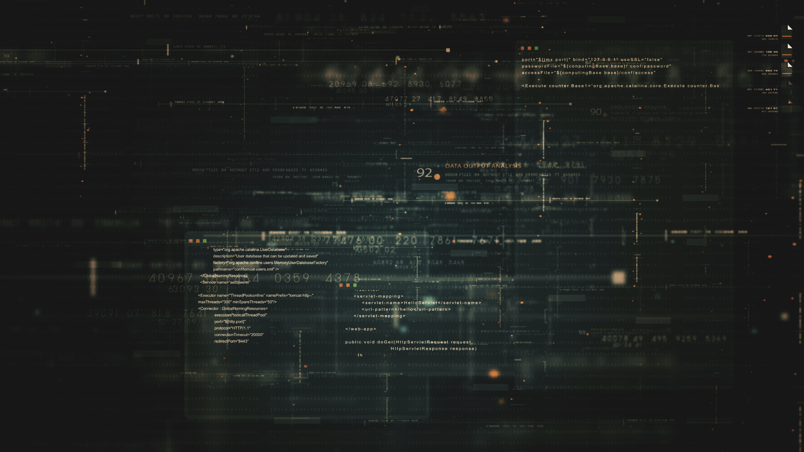

Deja de Filtrar Ruido.
Empieza a Cazar Amenazas.
No somos un escudo más. Somos el arma que te devuelve el control.
Mis herramientas me dan datos, mi comunidad me da inteligencia.
Los analistas pierden el 40% de su día persiguiendo falsos positivos. Mientras tanto, las amenazas reales se esconden en el ruido. ORION rompe este ciclo combinando IA predictiva con la velocidad de una red comunitaria de expertos en tiempo real. No más incertidumbre. Solo amenazas confirmadas.
Vigía de Accesos (IA)
Olvídate de revisar 1000 logs de login fallidos. El Vigía correlaciona tus accesos con bases de datos criminales globales y solo te alerta cuando el ataque es real y peligroso.
Centinela Interno (UEBA)
El enemigo puede estar dentro. Detecta comportamientos anómalos de usuarios y cuentas comprometidas antes de que extraigan un solo byte de información sensible.
Caza Amenazas Predictiva
ORION utiliza IA para buscar activamente amenazas emergentes y vulnerabilidades ocultas en tus activos, transformando la detección pasiva en una defensa proactiva.

Red Táctica Comunitaria
Inteligencia humana a la velocidad de un chat. Entérate de nuevos vectores de ataque confirmados por otros expertos de tu industria minutos antes de que lleguen a tu firewall.
Detección de Amenazas Internas
Mira hacia adentro. Nuestro sistema te alerta sobre comportamientos que desvían la norma en tu organización, ayudándote a mitigar riesgos de fugas de información.
Entorno de Simulación
No esperes al ataque real. Valida tus defensas lanzando simulacros seguros de las amenazas más recientes contra tu propia infraestructura.
El Cazador no espera.
Únete a la red de inteligencia que está redefiniendo la ciberseguridad defensiva.
Solicita tu acceso anticipado al MVP y empieza a cazar.
Solicitar Demo Táctica